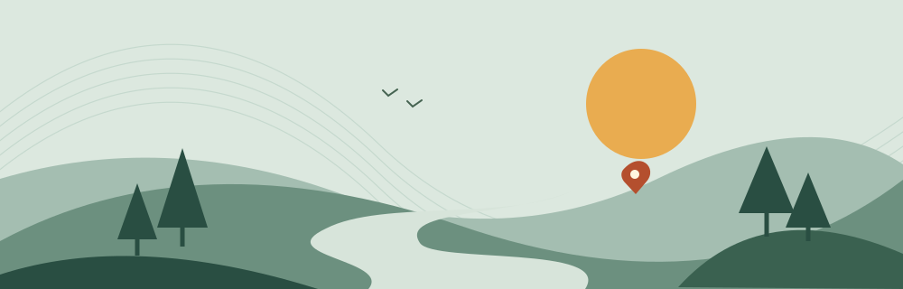

NYITOTT SZEMMEL
IRÁNY KIFELÉ ↗
IRÁNY KIFELÉ ↗
EGY KIS KITÉRŐGYŐR
A mai ötleted
becsült teljes idő
becsült teljes táv
Szabadtériutazási költség külön
A mini-küldetésed
EGY APRÓ CSAVAR?
Csak ha kedved van hozzá.
A helyszíni program idején belül, külön kitérő nélkül. Bármikor kihagyhatod.
EV-vel is indulhatsz. Ez autós útbecslés: a töltőhely, foglaltság és hatótáv nincs ellenőrizve, töltési idő nincs a tervben.
Hogyan jön ki az idő?
Helyi becslés légvonalbeli távból, kerülőszorzóval, haladási tempóval és szakaszonkénti ráhagyással. A tartalék ezen felül szerepel. Forgalom, menetrend, domborzat és lezárások nélkül; nem garantált érkezési idő.
Külső térképen nyílik meg. Csak a mintapontok kerülnek a linkbe.